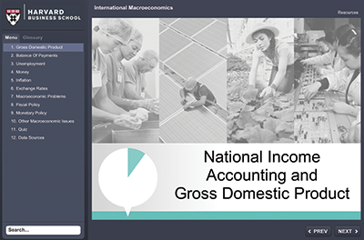
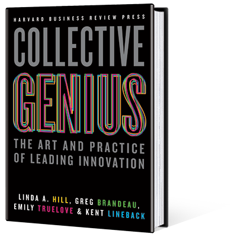
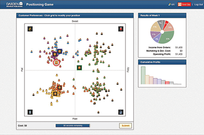

TN Teaching Note Available
Accounting
Krishna G. Palepu; Suraj Srinivasan; Charles C.Y. Wang; David Lane
Harvard Business School Case / #115029 / (27 pages)
When Alibaba debuted on the New York Stock Exchange, it created the largest IPO
in history and its initial desire to be listed on the Hong Kong Stock Exchange was
denied due to the company's wish to preserve its partner's control over decision rights.
Why did American stock markets approve of Alibaba's governance structures, despite the
warnings of many governance experts?
Elizabeth M.A. Grasby; Amy Shuh
Ivey Publishing Case / #W14623 / (6 pages)
The plant manager of an aluminum alloy production plant is faced with capacity
constraints and must determine which of 2 new specialty orders to take on. Both orders
cannot be filled simultaneously. Students are asked to (1) perform an industry size-up
of the global metals industry and its subset, the aluminum industry; (2) perform a
business size-up of the company's current operations; (3) determine the pros and
cons of accepting each customer order; (4) calculate the projected contribution margin
rates for each product order; (5) analyze, using differential analysis, each customer
order; and (6) make a decision about which order to accept. TN
Elizabeth M.A. Grasby; Karim Mashnuk
Ivey Publishing Case / #W13100 / (3 pages)
The owner of a popular batting cage business reveals financial details about
her company's long-lived assets for the purpose of completing the necessary
fiscal-year accounting transactions. TN
Ian Dunn; Elizabeth M.A. Grasby
Ivey Publishing Case / #W13074 / (5 pages)
The finance director of a football association is considering adding a 4th team
to the organization. Parents and players in the community want the football association
to field a football team in the varsity division for players aged 17 and 18. The finance
director needs to identify the amount of financing that would be required to operate a
varsity team. She must project a cash budget for the upcoming operating period and also
evaluate other scenarios that could help reduce the amount of financing needed. TN
Registered Premium Educators can see a full Free Trial online. Premium Educator Access is a free service.
Accountsville: Impairment of Fixed Assets
Authored by Lucia Egea Ronda
This interactive tutorial allows students to practice their understanding of IAS 36 as it pertains to the impairment of fixed assets. Students complete a series of tasks to find out which of the company's assets are impaired and then carry out the necessary adjustments to those assets. Students explore a fictitious town, Accountsville, in which they complete 5 scenarios. For each scenario, students must find the carrying amount, the recoverable amount, and the impairment value, with the help of short interactive exercises. It includes a short PDF that provides an overview of IAS 36. TN
#I0001E / Seat Time: 60 minutes
Paul M. Healy; V.G. Narayanan; Penelope Rossano
Harvard Business School Case / #115028 / (11 pages)
The Ethics Advisory Committee of the Institute of Chartered Accountants in
England and Wales (ICAEW) provides training and support for member chartered accountants
to help them deal with difficult professional situations. Members can seek help through
call centers and in-person meetings with accounting experts in the field to discuss how
to best handle difficult situations. In addition, the Ethics Advisory Committee meets
regularly to identify new issues that raise questions for professional standards. This
case examines professional standards for ICAEW chartered accountants and a number of
challenging ethical situations that members have faced.
Elizabeth M.A. Grasby; Ian Dunn
Ivey Publishing Case / #W11083 / (7 pages)
A budding entrepreneur, with her father, has purchased exclusive Canadian
distribution rights to Nutrifusion, a new health supplement that provides servings of
fruits and vegetables when added to a variety of foods. They are contemplating launching
Healthy Life Group (HLG), a company to market and distribute Nutrifusion in Canada. They
want to evaluate the product's financial feasibility for the company's first
year of operations, ending December 31, 2011. If the financials look favorable and the
business plan seems feasible, the father and daughter will proceed with the new venture.
This case serves as an introduction to financial analysis and the development of
projected financial statements. Students are given the opportunity to assess the
industry qualitatively, analyze a proposed distribution strategy, prepare the 1st
year's projected income statement and balance sheet, and then make an overall
decision based on their analysis. TN
Shannon Gombos; George Serafeim; Rebecca M. Henderson
Harvard Business School Case / #115021 / (16 pages) B Case Available
At Barclays Capital, Omar Selim had spearheaded the development of Arabesque—a
new socially responsible asset management firm designed to appeal to all investors
wishing to invest according to broadly held environmental and social values, as well as
to investors wishing to align their investments with their faith. Should Selim give up a
very successful career to compete in a highly competitive business, in which it could
be very hard to build a differentiated offering? And what role, if any, should values
and religious faith play in shaping the firm's products and
conduct?
Business & Government Relations
Sophus A. Reinert; Thomas Humphrey; Benjamin Safran
Harvard Business School Case / #715024 / (35 pages)
Unique among the world's countries, the Himalayan Kingdom of Bhutan had
abandoned the traditional policy goal of increasing gross domestic product (GDP) in
favor of pursuing gross national happiness (GNH). Famously, Bhutan ranked high on lists
of the happiest countries in spite of a tumultuous history, a low life expectancy, a
dismal literacy rate, a small and undiversified economy, and low GDP per capita.
Everyone, it seemed, from tourists and Hollywood screenwriters to leading development
economists, looked to Bhutan for enlightenment and perspective on crises both personal
and global. GNH had become the country's brand and suggested a possible future for
capitalism. Was Bhutan onto something? Was there really a trade-off between growth and
happiness, and if so, was it acceptable? TN
Richard H.K. Vietor; Hilary White
Harvard Business School Case / #715011 / (30 pages)
Colombia, the fastest-growing country in Latin America, continues to struggle
with productivity. Both labor productivity and total factor productivity have been low
for the past decade, despite economic growth of 4.7% annually. Many factors
contribute—everything from infrastructure to banking to informality. President Santos, 1
year into his 2nd term, is well aware of these difficulties and has put in place new
policies to mitigate them. His focus, however, is on peace negotiations with the FARC— a
possible settlement of the 50-year struggle that itself would significantly impact
productivity.
Forest Reinhardt; Jonathan Schlefer; Keith Chi-ho Wong; Mayuka Yamazaki
Harvard Business School Case / #715047 / (35 pages)
South Korea's economic success and its transition from authoritarianism
to democracy teach important lessons in national strategy and political economy. Now,
though, its famous chaebols may need reform, the population is aging, and relations with
the North are as tense as ever. What should the country's leaders
do?
Rawi Abdelal; Morena Skalamera; Sogomon Tarontsi
Harvard Business School Case / #715016 / (30 pages)
The U.S. could enhance or threaten China's energy security, but China was
unsure of U.S. intentions. China and the U.S. were both friends and potential foes. In
the meantime, Russia's own ambivalent relationship with the U.S. and its Western
allies worsened. In this context, China and Russia grew closer. Bilateral ties in the
energy trade quickly improved; Russian oil exports expanded while disagreements on the
terms of natural gas supplies were resolved. The case describes the impact of the
interplay of great power politics, domestic political considerations, and economic
factors on the efforts of the Chinese and Russian energy companies to expand business
ties.
Rawi Abdelal; Esel Cekin; Cigdem Celik
Harvard Business School Case / #715042 / (40 pages)
In December 2014, Russia canceled the South Stream pipeline that was envisaged
to deliver natural gas through the Black Sea basin on to Europe and replaced it with a
new pipeline through Turkey. The Turkish Stream was a great opportunity for Turkey to
turn itself into an energy hub of its region. It had already secured TANAP, a natural
gas pipeline to carry Azerbaijani gas to Europe through Turkey. The country's
geographical position was one of its crucial assets: to its east lay 70% of the
world's natural gas reserves; to its west was Europe, one of the biggest energy
consumers in the world. If the Turkish Stream and TANAP pipeline projects were to go
through and connect to other possible energy reserves within the wider region, would it
be likely that Turkey would eventually become one of Europe's main energy
corridors—perhaps even a hub?
Business Ethics
Keith Krehbiel
Stanford Graduate School of Business Case / #ETH1 / (4 pages) / Companion Case
Available
Following decades of civil strife among warring clans, exacerbated by the worst
drought in decades / (2010-2012), millions of starving, dislocated Somalis resided in
crowded camps throughout the country. Humanitarian aid organizations made good-faith
efforts to distribute food and medical treatment and supplies to those who suffered
most. Usually these nongovernmental organizations (NGOs) were thwarted by so-called
gatekeepers, who, backed by military force, required that all aid be delivered first to
them and only thereafter to the intended recipients, under conditions the gatekeepers
set. This case summarizes the tactics used by the gatekeepers of Al-Shabaab (a cell of
the radical Islamic group al-Qaeda) in Somalia and the corresponding risks that the
United Nations and NGOs had to confront.
Michael C. Feiner
Columbia Business School Case / #CU05 / (9 pages)
After 2 successful years of consulting work, Sonya lands a job at a U.S.-based
petroleum company. She thrives in the firm's corporate culture and is soon promoted
and transferred abroad to a developing country. However, she discovers that her firm has
budgeted $5 million for "legal" consulting—in essence, a payment to the local
government. When Sonya pursues the issue with her manager, he suggests that she leave
her post and get more experience back home. Through an analysis of Sonya's
experience, this case explores how one might navigate the challenges presented by such
an ethical dilemma. TN
Edward R. Freeman
Darden School of Business Background Note / #UV6582 / (16 pages)
This note explains managing for stakeholders, an emerging view that businesses,
and the executives who manage them, actually do and should create value for customers,
suppliers, employees, communities, and financiers (or shareholders)—which contrasts with
the dominant idea that businesses are to be managed solely for the benefit of
shareholders. The note examines why the dominant model is no longer viable in
today's business world and then goes on to define the general ideas of managing for
stakeholders and to sketch 3 primary arguments from ethical theory for adopting managing
for stakeholders.
Nien-he Hsieh
Harvard Business School Background Note / #315067 / (6 pages)
This note provides a framework to conceptualize managers'
responsibilities to employees in relation to economic, legal, and ethical
considerations. The note frames the central ethical challenge for managers as exercising
power in a fair manner. The fair exercise of power involves 3 components: respect for
legitimate expectations, procedural fairness, and distributional
fairness.
Mark Hunter; N. Craig Smith
INSEAD Case / #INS227 / (24 pages) B Case Available
In January 2008, Société Générale revealed that trader Jerome Kerviel had
exposed the bank to 50 billion euros in apparently unhedged and unauthorized trades,
resulting in 4.9 billion euros of losses when his positions were unwound. This case
provides an opportunity to explore the motivations underlying Kerviel's conduct and the
failure of the bank's internal controls, as well as other organizational and
sociological factors in this incident and the broader 2008 financial
crisis. TN
Adam Waytz; Vasilia Kilibarda
Kellogg School of Management Case / #KEL852 / (18 pages)
As an underwriter in Citibank's mortgage group, Sherry Hunt witnessed fraud for
years. After failed attempts to report it—to everyone from the boss to the FBI—Hunt
wondered what to do next. This case gives students the opportunity to recommend how Hunt
should proceed based on their analysis of the stakeholders involved. To aid
instructors, the case also includes videos of Hunt explaining what
happened. TN
Entrepreneurship
Emir Hrnjic
Ivey Publishing Case / #W14598 / (15 pages)
In April 2014, Alibaba's impending initial public offering (IPO) was
projected to be among the world's largest. Alibaba faced many choices regarding
ownership structure, trading location, IPO pricing, and IPO timing. The Hong Kong Stock
Exchange seemed like a natural fit for its IPO due to geographical, cultural, and
language proximity. Furthermore, 86.7% of Alibaba's revenues originated within
China. However, Alibaba insisted on "partnership governance," and the Hong Kong Stock
Exchange did not allow listing of companies with dual-class share structure. In
contrast, the New York Stock Exchange and NASDAQ did not object to Alibaba's
proposed ownership structure. While the Hong Kong investors knew Alibaba's business
better, the New York exchanges provided more liquidity and visibility. Against this
backdrop, Alibaba needed to make difficult decisions regarding its IPO. TN
Sami Mahroum; Elizabeth Scott
INSEAD Case / #INS824 / (18 pages) TN
The case examines the factors that influenced the founders' decision to
establish Bayt.com in Dubai, and how the online job site transformed recruitment
practices in the Middle East by facilitating access to skill and talent throughout the
MENA region. Among the locational drawbacks the company had to overcome were low
internet penetration rates, cultural barriers, and diverse legal and regulatory
systems.
Joan Farre-Mensa; Stephanie Siu
Harvard Business School Case / #815102 / (20 pages)
The case discusses the trade-offs associated with the different exit options
that private equity firm Brentwood Associates contemplated for its investment in Zoës
Kitchen during the summer of 2013: an IPO, a sale to a strategic or financial acquirer,
or waiting a few more years before exiting the investment.
Jeffrey J. Bussgang; Michael J. Roberts
Harvard Business School Core Curriculum Reading / #8240 / (47 pages) TN / Supplemental
Slides and Review Questions Available
This Reading takes a deep look at the venture capital (VC) industry in the
United States. VCs have a unique perspective on opportunity evaluation, deal structure,
new venture support, and exit strategy. Their work at all stages of the entrepreneurial
life cycle offers many lessons to company founders, even those whose ventures are not
backed by VCs. This Reading follows the chronological cycle of VC activity from the
entrepreneur's vantage point: deal evaluation, deal pricing, structure and terms,
working with VCs once the deal has been signed, and exit. The topics of deal pricing,
structure, and terms are treated in particular depth through a detailed examination of a
"term sheet"—the contract that sets out the terms of the VC financing. The Reading also
includes 3 Interactive Illustrations: "How Investor Expectations and Target Returns
Drive Company Ownership," "A Payoff Curve," and "Sell or Hold?"
Mitchell Weiss
Harvard Business School Case / #315075 / (23 pages)
Funding to scale Citizens Connect, Boston's 311 app, tests 2 public
entrepreneurs. In 2012, the Commonwealth of Massachusetts provides Boston's
Mayor's Office of New Urban Mechanics with a grant to scale Citizens Connect across
the state. The money gives 2 cocreators of Citizens Connect, Chris Osgood and Nigel
Jacob, a chance to grow their vision for citizen-engaged governance and civic
innovation, but it also requires that 2 City of Boston leaders sit on a formal selection
committee that pits their original partner, Connected Bits, against another player that
might meet the specific requirements for delivering a statewide version. The selection
and scaling process raised many questions beyond just which partner to choose, including
what would happen to the Citizens Connect brand as Osgood and Jacob's product
spread across the state, and who then could help scale their work best nationally.

Registered Premium Educators (a free service) can see a full Free Trial online.
International Macroeconomics
Authored by Laura Alfaro and Elizabeth A. Meyer
This interactive tutorial provides an introduction to the basic principles of macroeconomics and international macroeconomics. Organized in 10 modules, it covers Gross Domestic Product, Balance of Payments, Unemployment, Exchange Rates, Fiscal Policy, and more. In addition, the tutorial provides a quiz, a glossary, and a list of data sources. TN
#715702 / Seat Time: 60 minutes
Thomas R. Eisenmann; Lisa Mazzanti
Harvard Business School Case / #815067 / (16 pages) B Case Available
Quincy Apparel designs, manufactures, and sells work apparel for young
professional women that offers the fit and feel of high-end brands at a lower price. In
late 2012, Quincy's cofounders debate how to approach a crucial board meeting.
Their seed-stage start-up is running low on cash; to survive, it will need more capital,
probably in the form of a bridge loan from existing investors, who will attend the board
meeting. Quincy's sales have been strong, but due to the company's novel
sizing scheme, which provides more measurement dimensions than do typical women's
clothing companies, inventory is high and operations are complex. With more time and
capital, the cofounders are confident they can resolve operational problems. But will
they be able to persuade investors to provide more capital TN
William A. Sahlman; Michael J. Roberts
Harvard Business School Brief Case / #915543 / (15 pages) Instructor & Student
Spreadsheets Available
This case describes the evolution of a tech start-up, WebTracker, and focuses
on the decision of 2 aspiring entrepreneurs who have just received offers for venture
capital (VC) financing for the company. These offers, or term sheets, are similar in
some respects but different in others. The 2 firms offering financing are also
different. The heart of the case involves comparing these term sheets and determining
the "best deal" for them and for their company. The deal ultimately cut will parse the
economic rewards of success and implement control and governance provisions that are
designed to reduce risk for the VC. TN
Carliss Y. Baldwin; Hanoch Feit; Edward A. Minasian; Brandon Van Buren
Harvard Business School Case / #215037 / (8 pages)
In March 2013, Apple Inc. has a very large cash balance and is under pressure
to return cash to shareholders. Hedge fund manager David Einhorn thinks Apple can
"unlock value" by issuing perpetual preferred stock, dubbed iPrefs. Henry Blodget, CEO
of Business Insider, disagrees, saying, "You can't just wave your magic wand and
make something of nothing." This short case is designed to support a discussion of
"perfect" markets and the Modigliani-Miller capital structure irrelevance propositions.
The case focuses on 2 questions: / (1) from a shareholder's perspective, how is
Apple's cash different from cash in a bank or money market account? and / (2) can
Apple create significant value for shareholders by splitting each common share into an
iPref plus a common share?
Craig Furfine
Kellogg School of Management Case / #KEL854 / (18 pages) Instructor Spreadsheet
Available
Christopher Lenard and his longtime friend Kimberly Slater are exploring the
idea of developing a student-housing complex near the University of Wisconsin–Madison.
UW-Madison seemed to present attractive market and demographic conditions for investment
in student housing in the summer of 2012. But before committing a large share of his
personal wealth to the project, Lenard needs to conduct a more careful analysis of its
potential risks and returns. By putting themselves into the shoes of a budding real
estate entrepreneur, students will evaluate both the merits and pitfalls of various
approaches to the financial analysis of real estate development projects. TN
Craig Furfine
Kellogg School of Management Case / #KEL879 / (25 pages) Instructor Spreadsheets
Available
In October 2008, Anthony Keating, investment manager at the Boston private bank
Billingsley, Blaylock, and Montgomery, was searching for an investment strategy to
recommend to his high-net-worth clients. Traditional investments in the equity markets
were being decimated, and Keating's clients would be looking to him for ideas.
Keating began to explore the possibility of entering a trade that would profit as
homeowners defaulted on their mortgages. The more Keating learned about the trade, the
more he realized that he needed to know about mortgage-backed securities and credit
default swaps. The case provides instructors with a chance to introduce these financial
instruments while providing lessons applicable to students interested in value investing
or real estate finance. TN
Colette Southam; Annabel Yee
Ivey Publishing Case / #W14730 / (15 pages) Instructor & Student Spreadsheets
Available
In August 2013, an intern at Slatestone Group, an Arizona-based boutique
investment bank, was working on a targeted sell-side deal. Paterson Publishing, a
Fortune 200 company, had expressed interest in acquiring Slatestone's client
Bluntly Media Holdings, a private direct marketing agency. The intern was assigned to
help prepare the deal marketing material and assist with the valuation assessment of
Bluntly Media. He needed to use a variety of valuation methods and propose a strategy
that could assist Bluntly Media in attaining a higher price. TN
Malcolm P. Baker; Samuel G. Hanson; James Weber
Harvard Business School Case / #215020 / (14 pages)
This case describes the Dogs of the Dow investment strategy, value investing,
and using dividend yields as a means to determine intrinsic value. It also describes
exchange-traded notes and a particular exchange-traded note, known as the Dogs of the
Dow, which tracks the performance of the 10 highest-yielding stocks of the 30 stocks
that make up the Dow Jones Industrial Average (DJIA). The case provides share price
data, dividend data, and financial statement data on the 30 DJIA companies to enable
students to perform their own calculations.
Theo Vermaelen; Hidde van Melle; Mary Margaret Frank
INSEAD Case / #INS949 / (24 pages)
Female Health Company produces the female condom distributed by nonprofit
organizations in Africa to prevent HIV/AIDS. In February 2009 the company has to decide
whether to buy back stock. This provides an opportunity to check on whether the firm is
fairly valued and whether it should reconsider its capital structure and payout
policy. TN
S. Veena Iyer
Ivey Publishing Case / #W14467 / (14 pages) Instructor & Student Spreadsheets
Available
The Indian online retail ("e-tail") market had seen a flurry of activity.
Success stories such as Makemytrip.com and Naukri.com in the travel and job search
domains, respectively, were significant catalysts for this new breed of start-ups. Of
these start-ups, Flipkart stood out as one of the most successful (and audacious),
mostly because of the funding the company managed to secure over a very short period of
time as compared to its competitors. The firm was celebrated for its bold stance on
growth versus profitability but simultaneously had its share of critics and skeptics.
The latest round of venture capital funding had valued Flipkart at $1.6 billion, nearly
8 times sales. In less than 2 years, the firm had attracted nearly $550 million in
venture capital funds and its sales turnover had grown nearly thirtyfold. Was Flipkart
growing too big too soon? Were these valuations justified? TN
Stephen Sapp; Chris Chan
Ivey Publishing Case / #W13415 / (14 pages)
The director of the investment wing of a financial services provider must decide
whether his firm should continue to invest in the former front-runner in the personal
computer industry or switch strategies and invest instead in an up-and-coming
competitor. At a time of significant technological change and slowing global growth, the
director and his team of analysts set out to create an in-depth assessment of the
personal computer industry in order to make an informed decision about their firm's
optimum investment choices.
TN
David P. Stowell; Nicholas Kawar
Kellogg School of Management Case / #KEL848 / (25 pages) Instructor & Student
Spreadsheets Available
During December 2012, Jorge Paulo Lemann, a cofounder and partner at 3G,
proposed to Warren Buffett that 3G and Berkshire Hathaway acquire H.J. Heinz Company.
Lemann and Buffett decided that the Heinz turnaround had been successful and that there
was significant potential for continued global growth. 3G informed Heinz CEO William
Johnson that it and Berkshire Hathaway were interested in jointly acquiring his company.
Johnson then presented the Heinz board with the investors' offer of $70 per share
of outstanding common stock. After much discussion, the Heinz board and its advisors
informed 3G that without better financial terms, they would not continue to discuss the
possibility of an acquisition. Two days later, 3G and Berkshire Hathaway returned with a
revised proposal of $72.50 per share, for a total transaction value of $28 billion
(including Heinz's outstanding debt). Following a 40-day "go shop" period, Heinz,
3G, and Berkshire Hathaway agreed to sign the deal. Was this a fair deal? And what might
be the future consequences for shareholders, management, employees, and citizens of
Pittsburgh, the location of the company's headquarters? TN
John D. Macomber; Vidhya Muthuram
Harvard Business School Case / #815105 / (7 pages)
The Delhi-Mumbai Industrial Corridor (DMIC) is an ambitious economic
development project linking 6 of the most competitive states in India with the sea. The
corridor is modeled on the Jiangsu Corridor in China (Nanjing to Shanghai) and the
Tokyo-Hokkaido Corridor in Japan. The government of Japan is a major investor. Several
of India's proposed Smart Cities are located on the corridor. Eventual success of
the corridor depends on attracting jobs in very large numbers. Infinite Technology is a
big IT and BPO firm in Bangalore. The case looks at the economics and soft issues as
Anjali Varma of Infinite decides whether to depart Bangalore for Dholera on the DMIC.
This case works well with HBS Case / #214077, "Delhi-Mumbai Industrial Corridor:
India's Road to Prosperity?"
Hubert Pun; Siddharth Aiyar
Ivey Publishing Case / #W15005 / (5 pages)
An Amazon stockholder wants to decide the long/short positions for several put
options that would result in the lowest risk at the best possible return on her stocks.
In particular, she is looking to generate as much return as the status quo strategy,
where no put options are used. TN
Durga Prasad; Kulbir Singh; S. R. Vishwanath
Ivey Publishing Case / #W15188 / (16 pages)
Kingfisher Airlines, a leading airline company in India, had incurred
substantial losses and its net worth had eroded. This news was widely covered by Indian
and international press. Analysts and media were of the opinion that Kingfisher needed
equity infusion to steer it through the distress. Because of its financial difficulties,
the company's stock was trading at near-historic lows and its equity value was, in
fact, negative. Yet company management was emphatic that Kingfisher was on the road to
recovery, although it was negotiating a second debt restructuring with banks. Would this
restructuring prove more successful than the last? Could anything save Kingfisher from
this dire financial situation? TN
Malcolm P. Baker; Samuel G. Hanson; James Weber
Harvard Business School Case / #215026 / (21 pages)
Longbow Capital Partners is a value-oriented long/short hedge fund focused on
stocks in the energy sector. In January 2011, Longbow invested in NiSource, a Fortune
500 company that owns a diverse portfolio of regulated energy businesses. In late 2014,
Longbow was deciding whether or not to maintain its position in NiSource. To make this
decision, students must perform a discounted dividend analysis to determine the
fundamental value of NiSource's stock. Students are also asked to perform a
sum-of-the-parts analysis to assess the implications of NiSource's recent proposal
to pursue a tax-advantaged spin-off of its pipeline business.
William E. Fruhan; Wei Wang
Harvard Business School Brief Case / #915547 / (11 pages) Instructor & Student
Spreadsheets Available
This case presents a realistic situation in which a firm in financial distress
attempts an out-of-court financial restructuring by means of a debt exchange. Pinewood
Mobile Homes is a large manufacturer of prefabricated homes, producing one-story,
ranch-style houses; two-story, single-section, and Cape Cod modular homes; and
townhomes, apartments, and duplexes. The company has lost the ability to compete
effectively in the marketplace because it borrowed and acquired aggressively prior to
the housing market crash. In order to avoid filing for Chapter 11 bankruptcy, Pinewood
Mobile Homes must receive consent from senior lenders, junior creditors, and
shareholders for a comprehensive restructuring plan. This case is written for use in
elective MBA courses in corporate restructuring or advanced corporate finance. It can
also be used in upper-level undergraduate finance courses that cover financial
restructuring and corporate valuation. TN
C. Fritz Foley; Kevin Sharer
Harvard Business School Case / #215001 / (15 pages)
In March 2011, Northrop Grumman divested shipbuilding assets through the
spin-off of Huntington Ingalls Industries. This case reviews many of the key questions
faced by Northrop's CEO, CFO, and top management team during this process,
including questions concerning whether to sell or spin off the assets; how to handle
customers, employees, and investors during the restructuring; and how to reorganize a
diversified business to increase the performance of its parts.
Emir Hrnjic; David Reeb
Ivey Publishing Case / #W15136 / (14 pages)
A controlling shareholder of the NYSE-listed Chinese online gaming company
Shanda Games has offered a buyout at $6.90 per American Depositary (ADS); each ADS
consists of 2 ordinary shares. The offer provides a premium of 22% to the stock's
Friday close. Throughout the previous year, Shanda Games' ADS had typically traded
in the range of $3.00 to $4.50. As Shanda Games' independent directors attempt to
evaluate the offer, they wonder: should the shareholders accept it as it is, should they
ask for a higher price, or should they look for the alternatives? TN
Emir Hrnjic; David Reeb; Wee Yong Yeo
Ivey Publishing Case / #W15079 / (18 pages)
On October 9, 2013, JoS. A. Bank Clothiers Inc., a large U.S. retailer of
men's tailored and casual clothing, footwear, and accessories, made a hostile offer
to buy its larger rival Men's Wearhouse. The latter made a counteroffer on January
6, 2014, in what is known as a Pac-Man defense—the prey turned predator. JoS. A. Bank
responded by adopting a poison pill, announcing the planned acquisition of Eddie Bauer,
an outdoor apparel retailer. What started out as a simple offer had turned into a
contest with multiple counteroffers and the deployment of several takeover defenses. How
should Eminence Capital, a New York-based hedge fund and the largest shareholder in both
firms, react? How should each firm respond to the latest offer on its respective
table? TN
General Management
Herminia Ibarra Harvard Business Review Article / #R1501C / (9 pages)
Authenticity has become the gold standard for leadership. But as INSEAD
professor Herminia Ibarra argues, a simplistic understanding of what authenticity means
can limit leaders' growth and impact. All too often, we tend to latch on to
authenticity as an excuse for sticking with what's comfortable. But few jobs allow
us to do that for long. In this article, Ibarra explains how leaders can develop an
"adaptively authentic" style by experimenting with many different leadership approaches.
Allan Cohen
Babson College Case / #BAB723 / (6 pages)
This is a case organized around the theme of preserving an entrepreneurial
culture in the face of rapid growth, including over 800 employees and several offices.
Founded by 4 friends, the company has reached over $124 million in annual sales. As of
January 23, 2015, when the company went public, its market valuation was over $1.5
billion. The company is particularly conscious of wanting to preserve the open,
action-centered, fun culture that it has created. TN
W. Carl Kester; Craig Stephenson
Harvard Business School Brief Case / #915523 / (9 pages) / Instructor & Student
Spreadsheets Available
Classic Fixtures & Hardware Company is a nationally known manufacturer and
distributor of kitchen and bathroom fixtures and trim, as well as locksets and hardware
for doors and windows. The company is privately held and has limited access to capital
markets, so it depends on a loan facility with Southwest National Bank to finance its
seasonal working capital needs. Level production and seasonal sales result in higher
inventory levels and loan balances in the first half of the year and declining inventory
and loan balances in the second half of the year. In 2008, Classic's loan balances
have grown beyond forecasted amounts, and its CFO believes that Classic will likely be
unable to pay off the loan balance before the end of the year. The CFO and a senior loan
officer from Southwest have scheduled a meeting in order to determine both the reasons
for this problem and what Classic might do to turn itself around. TN
Karthik Ramanna
Harvard Business School Case
/ #115024 / (10 pages)
Hanguk Industries' U.S. country manager, Peter Lee, has a problem—his star
hire, Dylan Pierce, is threatening to quit. Hanguk is a large Korean conglomerate
multinational that has been keen to attract foreigners. Dylan was hired by Peter to work
in Hanguk's U.S. operations. After 18 months, Dylan was promoted to company HQ in
Seoul, to work with Peter's former boss. Dylan, who is gay and who thrived at
Hanguk's California office, quickly runs afoul of the conservative culture at
Hanguk's Korean HQ. Dylan's boss in Korea tells him he needs to be less
"girly" if he wants to succeed at the company. Angered, humiliated, and confused, Dylan
tells Peter he's ready to quit. Peter must respond. TN

Available as an eBook.
Collective Genius
The Art and Practice of Leading Innovation
Authored by Linda A. Hill, Greg Brandeau, Emily Truelove, and Kent Lineback
This global bestseller is now updated with new content. Blue Ocean Strategy presents a systematic approach to making the competition irrelevant and outlines principles and tools any organization can use to create and capture their own blue oceans. This expanded edition includes: a new preface by the authors; updates on all cases and examples in the book; 2 new chapters and an expanded 3rd one—alignment, renewal, and red ocean traps—that address the most pressing questions readers have asked over the past 10 years.
#13296 / Length: 320 pages / US$ 28.00
Dianne Bevelander; Jacqueline Nolan; Michael Page; Gina Jardine; Hans
Cleton
Harvard Business Review Case / #R1506K / (5 pages) Case Commentary Available
Based on an actual business case study: Sema is a Turkish accounts manager who
has recently been transferred from her company's Ankara office to its headquarters
in Amsterdam. There she finds that her new boss, Jack, has also just relocated, from
Manchester. He gets off on the wrong foot with her by commenting on her short stature,
and over the next 6 months she finds his brash, jokey style increasingly offensive.
Nevertheless, he demonstrates appreciation and respect for Sema's abilities.
Finally she contemplates lodging a complaint with HR—but that could threaten the success
of her team's project.
Wiboon Kittilaksanawong; Gary Gillet
Ivey Publishing Case / #W14682 / (17 pages)
By investing in innovation to ensure continuing delivery of new recreational
experiences, Nintendo was dominant until the mid-1990s, when the 2 multinational giants
Sony and Microsoft entered the market with large investment capital and promotional
campaigns. Nintendo competed with these new challengers, but its Wii U and 3DS systems,
launched in November 2012, met with little success. In 2014, the company faces many
questions as it looks to move forward. Has it lost its innovative edge? Can the new
strategic directions—to revitalize existing products, take advantage of smart devices,
actively utilize existing character IPs, and expand into other new markets and other new
business areas—successfully revive the traditional dominant position of Nintendo in the
game industry? TN
Rob Kaplan; Bernardo Bertoldi
Harvard Business School Case / #415045 / (29 pages)
Chrysler recently exited from the bankruptcy process, with U.S. government
support and with Sergio Marchionne as CEO. Now was the time to work out how to create
synergies with FIAT; how to improve the current manufacturing, product, and distribution
network configuration; and how to define the future product portfolio to compete over
the long term. In 2004, Marchionne was appointed CEO of FIAT Group, headquartered in
Turin, Italy, when the company had faced a near-hopeless crisis. He performed an extreme
makeover and turned the company around. In 2008, the entire global automotive industry
had entered a deep crisis; in response, FIAT and Chrysler had forged a partnership, and
Marchionne now found himself in the same situation again.
Isaac Sastre; Govert Vroom
IESE Business School Case / #IES473 / (20 pages)
The case describes the business model of Spotify, setting it against the
backdrop of a music industry that has faced steep revenue declines since the advent of
digital formats in the late 1990s and the rise of illegal file sharing. The case also
presents the competition Spotify is facing from the likes of Pandora, Google, and Apple
and eventually poses the question of whether Spotify has a viable long-term business
model despite explosive user and revenue growth as of 2014. The case also considers
whether Spotify's model could eventually return the industry to a path of global
growth, as has occurred in some of the markets the company has entered. TN
Human Resource Management
Gabrielle R. Lopiano; Mary A. Watson
NACRA Case / #NA0353 / (5 pages)
The vice president and general manager of Northeast BMW, a family-owned car
dealership, must determine what disciplinary actions to take against an employee who
posted defamatory comments and photos to his Facebook page referencing 2 incidents at
the dealership. The first involved a launch event of the redesigned BMW 5 Series model
at which the sales staff was dissatisfied with the quality of refreshments offered to
potential customers. The employee also posted pictures and disparaging captions about an
accident that occurred at the company's adjacent Land Rover dealership later that
week. The vice president learned of the Facebook postings through phone calls from
neighboring dealers. TN
Marcus Buckingham; Ashley Goodall
Harvard Business Review Article / #R1504B / (10 pages)
Like many other companies, Deloitte realized that its system for evaluating
the work of employees—and then training them, promoting them, and paying them
accordingly—was increasingly out of step with its objectives. It searched for something
in real time, more nimble, and more individualized—something squarely focused on fueling
performance in the future rather than assessing it in the past. The new system will have
no cascading objectives, no once-a-year reviews, and no 360-degree-feedback tools. Its
hallmarks are speed, agility, and constant learning, all underpinned by a new way of
collecting reliable performance data. To arrive at this design, Deloitte drew on 3
pieces of evidence: a simple counting of hours, a review of research in the science of
ratings, and a carefully controlled study of its own organization. With new evidence in
hand, the company set about designing a radical new performance management system, which
the authors describe in this article
Robin J. Ely; Pamela Stone; Colleen Ammerman
Harvard Business Review Article / #R1412G / (11 pages)
On the occasion of the 50th anniversary of the admission of women to Harvard
Business School's MBA program, the authors, who have spent more than 20 years
studying professional women, set out to learn what women HBS graduates had to say about
work and family and how their experiences, attitudes, and decisions might shed light on
prevailing controversies. What their comprehensive survey revealed suggests that the
conventional wisdom about women's careers doesn't always square with reality.
It is now time, the authors write, for companies to consider how they can
institutionalize a level playing field for all employees, including caregivers of both
genders. The misguided assumption that high-potential women are "riskier" hires than
their male peers because they are apt to discard their careers after parenthood has
become yet another bias for women to contend with.
Debolina Dutta; Sushanta Mishra; Matthew J. Manimala
Indian Institute of Management Bangalore Case / #IMB491 / (22 pages)
HCL Technologies Ltd., India's fastest-growing IT services company, had
radically improved its performance since the announcement of its famous "Employee First,
Customer Second" strategy. Although sales, customer, and employee satisfaction, had
significantly increased, HCL still lagged its competitors on overall profitability. With
personnel costs accounting for a significant part of the operating cost, HCL responded
to the changing competitive environment and redesigned its talent management strategy.
The case is set in the dynamic context of the growing competitive environment of talent
shortages and increasing wage costs in India, where the Talent Acquisition Group (TAG)
of HCL is looking to become a true business partner by evolving its service capability
to help increase overall profitability. TN
Peter Cappelli
Harvard Business Review Article / #R1507C / (9 pages)
Complaints against HR, which are nothing new, have a cyclical quality.
They're driven largely by the business context. When companies are struggling with
labor issues, HR is seen as a valued leadership partner. When things are smoother all
around, managers wonder what the function is doing for them. This is a moment of
enormous opportunity for HR leaders to separate the valuable from the worthless and
secure huge payoffs for their organizations. The author outlines some basic but powerful
steps HR leaders can take.
Information Technology
Easwar Krishna Iyer; Jayanthi Ranjan
Ivey Publishing Case / #W14671 / (7 pages)
Within a few years of its establishment in 2010 by 4 young engineers in Pune,
India, BlazeClan Technologies had prospered as a cloud solutions delivery company by
providing true value to its customers around the world. By 2014, though, the company was
facing a long and slow sales cycle in the Indian market, where businesses were hesitant
to give up in-house data control to the cloud. Though the company invested a lot of
marketing dollars in educating this potential segment through events, webinars, social
media campaigns, and talks at important industry forums, the customer base was not
building and market penetration was not gaining ground. The momentum that was badly
needed to push cloud adoption to the next level was also affected by external factors,
such as the availability of the Internet, regular service outages leading to network
disruptions, resistance to change, and unclear licensing issues. The company had a
number of decisions to make to go forward. TN
Glen L. Urban; Fareena Sultan
MIT Sloan Management Review Article / #SMR513 / (7 pages)
Smartphones make up an increasing share of mobile devices, and mobile apps are
among smartphones' most popular features. For companies, apps provide ample revenue
opportunities. Mobile advertising has seen triple-digit percentage growth each year
since PricewaterhouseCoopers began capturing this data in 2010. Yet some people have
doubts about the effectiveness and viability of mobile advertising and believe that apps
are a better medium. Authors Glen L. Urban and Fareena Sultan think one of the most
effective uses of mobile media will be apps that are designed to build trust. They call
these "benevolent" apps because the apps' value is directly tied not to selling
products but rather to advancing consumers' interests and helping them solve
problems or make decisions.
Derrick Neufeld; Brad Evans
Ivey Publishing Case / #W14540 / (11 pages)
Michael Lewis's book Flash Boys revealed to the public numerous
controversial Wall Street trading practices made possible by advances in technology, as
well as regulatory changes that were (ironically) intended to improve pricing fairness
in the financial markets. Lewis's story focused on the man who blew the whistle:
Brad Katsuyama, a Canadian banker who ran the New York trading desk for the Royal Bank
of Canada. In 2010, he had noticed some odd system responses to his trading requests and
began to ask questions. The answers he discovered, and publicized, about high-frequency
trading set off a firestorm regarding the moral integrity of the financial markets. Very
few people understood what was happening, and fewer still comprehended the central role
played by information technology. TN
Arpan Kumar Kar
Ivey Publishing Case / #W14761 / (13 pages)
Business Fundas, a portal that publishes educational business and management
articles, is situated within the electronic publishing industry, which has many players
and is highly fragmented. The start-up company faces many challenges in its efforts to
position itself for growth and to take advantage of various innovative value
propositions and business models. The senior managers hope to gain insights into
user-specific trends through the use of data analytics. TN
Deborah Compeau; Cato Pastoll; Tyler Rochwerg; Brandon Vlaar
Ivey Publishing Case / #W15169 / (12 pages)
In December 2012, the management of Starbucks Canada, an autonomous subsidiary
of the U.S.-based coffeehouse chain, is trying to decide how best to implement mobile
payments in its 1,350 locations across Canada. While the company is using a mobile
application to accept payments through its proprietary Starbucks Card, rival Tim
Hortons has recently introduced a more advanced mobile payment solution. There are many
new and emerging technologies to choose from, including Square Wallet, Bluetooth Low
Energy Beacons, MintChip, and mobile wallet/credit card near-field communication. Will
these systems allow for an enhanced store experience? TN
Vu Minh Khuong; Robert D. Austin
Ivey Publishing Case / #W15081 / (26 pages)
Vietnam has made impressive economic gains over a period of 3 decades,
following the Doi Moi reforms of 1986. Before reform, the country's socialist
economy had been unable to displace the poverty that had plagued the country in the
aftermath of the Vietnam War. After reform, Vietnam has experienced many years of
sustained growth, as evidenced by its advances on several economic performance rankings.
By 2014, Vietnam's rankings compared favorably with those of many of its Asian
neighbors. A major feature of the country's strategy for economic development was
its emphasis on information and computing technologies. Students will analyze
Vietnam's past successes to extract lessons that can lead to additional future
success. TN
Venkatesh Narayanamurti; Ryan Ellis
Harvard Kennedy School Case / #KS1013 / (11 pages) Epilogue Supplement
Available
In 2011, Dillon Beresford, a computer security expert, discovered a series of
new vulnerabilities impacting components of widely used industrial control systems.
These new, previously unknown vulnerabilities–what are known as "zero-days"–were
potentially very serious. Zero-day vulnerabilities are key components of computer
viruses, worms, and other forms of malware. Vendors and security firms seek these flaws
in order to patch and fix insecure software and hardware. Increasingly, however,
nation-states and criminals purchase zero-days from independent security researchers in
order to develop new destructive cyberweapons and capabilities. Managing the growing
trade in zero-day vulnerabilities is a key challenge for policymakers and corporate
leaders. The case follows Beresford as he discovers a set of new zero-days and considers
the different disclosure options available to someone in his position. TN
International Business
Margaret Pierson; Garrett J. van Ryzin
Columbia Business School Case / #CU36 / (26 pages)
Founded by Columbia Business School classmates, Frogtek was created as a
technology business with a social mission: to help micro-retailers in Latin America
improve their operations through applications loaded onto mobile phones. While the
market was large—400,000 micro-retailers operated in Colombia alone—and store owners
appeared interested in the service, the right approach was far from clear. The
company's founders struggled with questions such as how to distribute the mobile
applications and how much to charge the generally low-income store owners. In this case,
students work on an operational strategy for the seed-funded start-up after examining
its business plan, social goals, market opportunity, and competitive environment. This
case covers operational, entrepreneurial, and technological challenges in micro-retail
and supply chain management in developing economies. The focus is on the "bottom of the
pyramid" retail context.
Lei Li; Howard Feldman; Alan Eisner
NACRA Case / #NA0310 / (21 pages)
GreenWood Resources Inc., a Portland, Oregon, USA-based investment and asset
management company, had a worldwide focus on high-yield and fast-growing tree farms.
GreenWood had struggled for almost 10 years to obtain significant investment funds until
2007-2008. Through persistent effort, GreenWood built the key elements (people,
resources, and business networks) for a successful venture despite the serious early
financial constraints. GreenWood entered and navigated the Chinese market, with only a
fraction of the funds it needed. The founder seized an opportunity to organize a $175
million private equity fund to acquire a large poplar plantation in Oregon through his
connections with the timber investment community. The acquisition enabled GreenWood to
become a visible player in the tree plantation industry and facilitated its securing an
additional commitment of $200 million of capital for use in China. Notwithstanding the
availability of the capital and its cumulative knowledge of the Chinese market, the
investment screening and negotiation process in China turned out to be complex due to
the differences in business approaches and culturally embedded mindsets. In June 2010,
Jeff and his team were weighing the pros and cons of 2 potential projects. TN
Jesse J. Greene
Columbia Business School Case / #CU68 / (19 pages) / Student Spreadsheet
Available
In the spring of 2012, the executive team at Midwest Electronics decided to
manufacture its products in Asia for the Asian market. That was a challenging new
direction for the company, and subsequent difficult decisions—where to situate the
factory, whether to build a new facility or acquire an existing one, and how to finance
the project—would also need to be made. This case presents students with the
company's summary financial statements, as well as labor, real estate, and cost of
capital information, in order to assess the myriad of financial, cultural, and political
questions that arise when a company considers relocating some of its manufacturing
abroad. TN
Rajeev Kohli; Alonso Martinez
Columbia Business School Case / #CU71 / (31 pages)
In September 2012 Walmart became the first multinational retailer to announce
entry into India. The company would need to invest heavily in processing, refrigeration,
storage, and information systems to open and operate stores in the country. The
international division's executives had thought that similar investments would pay
off when they invested in retail stores in China, only to experience early missteps.
This case provides background information about the retail environment in both China and
India and summarizes Walmart's experiences in both countries, asking students to
suggest a plan for Walmart's expansion into India that aligns well with its global
strategy and proven business strengths. TN
Marketing
John A. Quelch; Qing Xia
Harvard Business School Case / #515102 / (18 pages)
The CEO of a health care-based REIT is considering alternative nursing home
investment strategies. Students must consider macro industry trends, scale and scope
issues, and consumer segmentation data in making their recommendations. TN
Elie Ofek; Natalie Kindred
Harvard Business School Case / #515032 / (30 pages)
In late 2013, telehealth company American Well, which developed a digital
platform that allowed patients to conduct online medical consultations with physicians,
is considering pursuing a direct-to-consumer (DTC) strategy. To date, American Well had
primarily sold its solution to health plans, which then provided online care services to
their members using their own brand names. But a surprisingly small number of individual
members had actually used the online care service. American Well management believed low
consumer awareness—the result of insufficient marketing by health plans, among other
factors—was hampering uptake of what should have been a highly valuable offering for all
stakeholders involved. They wondered whether a DTC approach, in which American Well
would become a consumer brand and market a telehealth service directly to the public—for
example, through a mobile app—could drive utilization and catapult the business to the
next level. The case forces students to grapple with the challenges and barriers
involved in disrupting an established industry, examine alternative go-to-market
strategies and the timing of implementing them, and consider different business models
to manage supply and generate revenues.
Luisa Mazinter; Nicola Kleyn; Michael Goldman; Jennifer Lindsey-Renton
Ivey Publishing Case / #W14684 / (11 pages) B Case Available
First National Bank (FNB), one of South Africa's "Big Four" banks, has
invested in a strategy of innovation to grow its market presence in South Africa, other
emerging-market African countries, and India. In line with its strategy to lead digital
banking in South Africa, FNB invested in building a social media strategy to enable the
brand to strengthen its relationships with customers through building customer knowledge
and stickiness and humanizing its brand. In 2012, FNB's head of digital marketing
and media sees a tweet from Standard Bank stating that it has instructed its attorneys
to lodge a complaint against what it alleges to be FNB's misleading advertising.
She wonders whether Standard Bank's use of Twitter to communicate this competitive
action is related to FNB's extensive and well-publicized use of the micro-blogging
service. She knows that the debate on Twitter will be a significant indicator of whether
her social media strategy has been successful. How can FNB continue to differentiate
itself and alleviate the pressure on non-interest revenues? TN
Anat Keinan; Kristina Maslauskaite; Sandrine Crener; Vincent Dessain
Harvard Business School Case / #515074 / (25 pages)
In 2014, Chiara Ferragni, a globe-trotting founder of the world's most
popular fashion blog, The Blonde Salad, had to decide how to best monetize her blog as
well as her shoe line, called the Chiara Ferragni Collection. A year earlier, Ferragni,
together with her team, had already made a decision to transform her blog into an online
lifestyle magazine and to build its positioning as a high-end brand. It meant that The
Blonde Salad envisaged cooperating with only a limited number of luxury fashion
advertisers, inevitably reducing the blog's revenues. Ferragni considered changing
the revenue-generating model by incorporating an online marketplace within The Blonde
Salad, but which strategy and timeline would she need to achieve her aim? Should
Ferragni's shoe line, a separate company with a different ownership structure, be
merged with The Blonde Salad, or was it desirable to keep the 2 apart?
Anita Elberse
Harvard Business School Case / #515054 / (27 pages)
In February 2014, Burberry's chief executive officer Angela Ahrendts is
preparing to hand the reins of the English luxury fashion company to chief creative
officer Christopher Bailey. Under Ahrendts and Bailey's partnership, in place since
2006, Burberry's revenues have tripled to more than 2 billion English pounds, and
operating profits have more than doubled. Ahrendts has led Burberry to become a brand
that once again stands for luxury and has a strong global and digital footprint. Yet the
leadership change is met with skepticism. Is Burberry's current strategy also the
right one for the future, and can Bailey continue Burberry's
transformation?

Registered Premium Educators (a free service) can see a full Free Trial online.
Marketing Exercise: The Positioning Game
Authored by Paul W. Farris, Darden School of Business
Using perceptual maps, students compete for profit and market share by positioning their product at an ideal place in the market. Instructors can customize various elements, including the market and product attributes, timing and number of rounds, and costs associated with positioning changes. Students learn key lessons regarding market structure and segmentation, branding, competitive analysis, consumer-driven product development, and the critical role of product positioning in marketing strategy. TN
Multi-player: Groups of 2-6 students / Seat time: 30–45 minutes
John A. Quelch; Margaret Rodriguez
Harvard Business School Case / #515060 / (16 pages)
In 2014, Dr. Michael Dulin, chief clinical officer for analytics and outcomes
research and head of the Dickson Advanced Analytics (DA2) group at Carolinas HealthCare
System (CHS), successfully unified all analytics talent and resources into one group
over a 3-year period. Rapid increases in computing power and decreases in data storage
costs had enabled DA2's data architects to build predictive models incorporating
complex clinical, financial, demographic, and claims data that would have been
impossible to create only a few years before. However, in 2014, both Apple and Google
announced features in their new mobile operating systems that collected and displayed
output from various health-wearables, as well as electronic medical record (EMR) data.
Their expertise in analytics and access to demographic and location data, as well as
large consumer bases, led Dulin to consider which players consumers would trust to
integrate their health care data in the future and what role DA2 could
play. TN
Elie Ofek; Sang-Hoon Kim; Michael Norris
Harvard Business School Case / #515015 / (26 pages)
Buoyed by the success of K-pop music and K-drama television shows in Asian
countries, Jay Lee, chairman of the South Korean conglomerate CJ Group, believed that
the time was ripe for taking Korean cultural content to the West. One initiative,
carried out by the group's entertainment and media (E&M) division, was a
daylong fan convention, called KCON, that was held in Irvine, California, in October
2012 and featured various Korean cultural elements, such as music, dance, film, and
food. In the spring of 2013, Miky Lee, the group's vice chairman, called a meeting
with key executives to review the results of KCON 2012 and make a recommendation to the
chairman on whether to hold a similar event in 2013. As part of their deliberations, the
executives were expected to consider where a potential 2013 convention should be held,
which artists to invite, which target consumers to focus on, how to price tickets, and
how to attract more sponsors. With KCON 2012's having lost money despite a robust
turnout, it was far from clear whether to repeat the event and, if so, whether its scale
should be expanded beyond 2012's $1.1 million budget.
Michael Taylor; Ramasastry Chandrasekhar
Ivey Publishing Case / #W14625 / (15 pages)
After several years of being in a near-steady state, the market share of
Colgate-Palmolive Canada Inc. in the toothpaste category has gathered momentum in 2012.
In a bid to extend the gap between the company and its primary competitors in the
category in 2013, the vice president of customer development is discussing the options
with his team at company headquarters in Toronto. Market share is an important
performance metric at the company. One suggestion is to increase the marketing budget.
There is a general consensus that marketing dollars should not be diffused across
activities during the year, but there are differences of opinion about what to focus
on—trade promotions, consumer promotions, or advertising—in order to sustain the
momentum in market share in 2013. TN
Christopher Marquis; Qi Li
Harvard Business School Case / #415050 / (22 pages)
This case provides an opportunity to examine and discuss how a traditional
Chinese private business was launched and developed into a globalizing, multi-industry
corporation. It also highlights how second-generation entrepreneurs successfully
developed an innovative industry model to sustain a green and profitable business; how
the company valued, motivated, and retained its talent; and how Chinese private
enterprise can go global.
Leslie John; John A. Quelch; Robert S. Huckman
Harvard Business School Case / #515010 / (12 pages)
The case describes a program that CVS Health recently implemented to improve
medication adherence, an important problem from societal, public policy, and firm
perspectives. sA test of the program, costing hundreds of thousands of dollars to
implement, increased the proportion of adherent customers by 1.4 percentage points.
Students are asked to quantify the system-wide economic benefit of this improvement and
draw upon insights from behavioral science to examine approaches for boosting medication
adherence. TN
Lynda M. Applegate; Lisa Mazzanti
Harvard Business School Case / #815087 / (27 pages)
Dhamani started as a dealer in loose gemstones in 1969 in Jaipur, India. By the
2000s, it was headquartered in Dubai, United Arab Emirates, and had expanded into
diamonds and retail. The family business was now in its second generation of leadership
and aimed to become a top global jewelry brand within the next 10 years. The family had
been successful throughout its various inflection points in the past—but had it
positioned itself well enough to soon begin competing with the global, high- end jewelry
houses, such as Cartier and Bulgari?
John A. Quelch; Sunru Yong
Harvard Business School Brief Case / #915501 / (8 pages) Student Spreadsheet
Available
This case centers on the potential and challenges of entering an emerging
market. It provides a brief overview of the Ethiopian market, market reforms and
policies, and the business environment faced by foreign companies. Three multinational
businesses, CareCo, ShoeCo, and MedCo, must decide whether and how to enter the
Ethiopian market. Students are asked to make a recommendation for each company based on
the attractiveness of the market, the factors that matter most for success, and an
assessment of what applies to the companies. TN
Mary Weil; Julia Cutt
Ivey Publishing Case / #W14320 / (8 pages) / Supplemental Slides Available
On March 27, 2014, the new chief executive officer of Lululemon Athletica Inc.,
headquartered in Vancouver, British Columbia, has just announced the previous
year's flat 4th quarter results. These unimpressive financial figures have
amplified the need to address the company's damaged reputation. In 2013, the
apparel brand faced a product recall and a public relations backlash after a
controversial interview and botched apology by its founder, as well as the resignation
of several key executive employees. A communications strategy must be devised to repair
the company's reputation and regain the trust of both investors and
customers. TN
Eric T. Anderson; Vasilia Kilibarda
Kellogg School of Management Case / #KEL889 / (15 pages)
It is February 2011, and Brian France, CEO of NASCAR (the National Association
for Stock Car Auto Racing), is facing a crisis. In the past 5 years, attendance at
weekend NASCAR races has fallen 22% and television viewership has declined 30%. Key
marketing sponsors have recently left the sport. At the same time, the U.S. economy has
only begun to recover from an economic recession that has had an adverse impact on the
sport of auto racing as a whole. Some leaders within NASCAR counseled Brian that these
trends in attendance, viewership, and sponsorship stemmed from the recession and that
NASCAR should continue with business as usual. But Brian sensed that the industry needed
fundamental change and that he was the one who must lead this change. NASCAR embarked on
an unprecedented amount of qualitative and quantitative research to assess the strengths
and weaknesses of the entire industry. At its heart, this is a case about great
leadership and transforming marketing throughout an entire industry. A wrap-up video
from CEO Brian France summarizes how NASCAR executives tackled the difficult questions
posed in the case. TN
Neeraj Pandey; Gaganpreet Singh
Ivey Publishing Case / #W15214 / (14 pages)
The chief executive officer of Malaysia Airlines (MAS) had the daunting task of
sustaining a business that had suffered the tragic loss of 2 of its airliners in a span
of just 4 months. Prior to this, a $392 million loss, as well as the inability to
compete with lower-cost carriers, had posed a great challenge to MAS. Management was
planning to initiate a cost-cutting strategy to manage pricing and the competitive
challenges of the aviation industry when these incidents shocked the world. The
disasters greatly impacted customer confidence, as reflected in the company's
declining booking rates and stock prices. With its reputation severely damaged, MAS was
faced with many hard-hitting questions from various stakeholders about the
airline's prospects. Many felt there was a need to transform the entire business
model. The top executives pondered various options, including a rebrand of the airline,
a new discounted pricing structure to build volume, a private equity infusion, a merger,
and filing for bankruptcy. Each option would have to be considered very carefully, as
the changes made to the business would decide the future of MAS. TN
David Dubois; Pal Kaur Mastak
INSEAD Case / #INS945 / (10 pages)
The case illustrates an innovative integrated marketing campaign by Nokia to
promote its new phone, the N8. In early January 2010, Stuart Wells, integrated global
campaign lead at Nokia, initiated and supervised the execution of an ambitious
integrated marketing campaign. The case follows the decision-making process
step-by-step, with particular attention to the use of digital channels in the launch
strategy and to social media measurement and ROI. TN
Rohit Deshpande; Esel Cekin
Harvard Business School Case / #515059 / (21 pages)
This case concerns Yildiz Holding's acquisition of Godiva Chocolatier from
its previous owner, Campbell Soup, and its strategy in preserving Godiva's "made in
Belgium" brand position. Provenance paradox, a problem faced by companies in emerging
countries trying to establish their brands in developed markets, had not become a
problem for Yildiz Holding. After patiently waiting 5 years and seeing the company not
performing as desired, Murat Ülker, the chairman of Yildiz, decides to change the
management structure and encourage rethinking brand positioning, channels, and
communications in the U.S. market. How was the Godiva brand affected by the execution
problems of previous management? Why did Godiva succeed in international markets while
it declined in the U.S.?
Sheila Marie Cruz-Rodriguez; Victor Quinones
Ivey Publishing Case / #W14720 / (8 pages)
Globally acclaimed singer, actor, author, and Grammy Award-winner Ricky Martin
"decided [on March 29, 2010] to put an end to the hell that was going on inside [his]
mind" by using Twitter to openly declare his homosexuality. Issues posed by the
revelation included: what options were available to Martin's management before and
after the revelation in order to effectively deal with situations that could have
jeopardized Martin's career and future projects? Should those close to Martin have
planned for a potential brand-repositioning strategy? If so, how should they have
handled it? TN
Anat Keinan; Sandrine Crener
Harvard Business School Case / #515075 / (4 pages)
Stella McCartney launched her own fashion house under her name in a partnership
with the luxury conglomerate Kering as a 50/50 joint venture in 2001. A lifelong
vegetarian, Stella McCartney does not use any leather or fur in her collections, which
include women's ready-to-wear, handbags, shoes, lingerie, eyewear, fragrance, and a
kids' line. Stella McCartney's achievement in fashion and social awareness has
been recognized on many occasions, and her commitment to sustainability is present
throughout all her collections and numerous environmental and charitable initiatives. As
climate change is becoming a more pressing issue, companies are pressured to embrace a
more sustainable approach to their business. With fashion and luxury industries
progressively rising to this challenge, what does it mean for Stella McCartney's
brand's ethos to be a responsible, honest, and modern company?
Operations Management
Nikolaos Trichakis; Gerry Tsoukalas; Emer Moloney
Harvard Business School Case
/ #615046 / (25 pages)
Credem, an Italian regional bank, grants loans to Parmigiano-Reggiano producers
and holds the cheese as collateral in its own warehouse during the maturation process,
essentially replacing part of the operations for the cheese producers and gaining deep
operations expertise. TN
Singfat Chu; David Ringrose
Ivey Publishing Case / #W12888 / (3 pages) Instructor Spreadsheet Available
The degradation of the environment has led many governments and customers to
pressure businesses to make their operations more nature friendly. The case illustrates
an effective example of corporate social responsibility. Specifically, it demonstrates
how a small increase in a supply chain budget can drastically reduce carbon dioxide
(CO2) emissions in the transportation of LCD TVs from their manufacturing bases to a
distribution center. TN
Robert S. Huckman; Michael Norris
Harvard Business School Case / #615069 / (11 pages)
In 2015, the I-PASS Patient Handoff Program Team, led by 6 pediatricians around
the U.S., had to determine the best way to disseminate their program, which had been
proven to reduce communication errors in patient handoffs in hospital settings. Should
they turn it into a standalone business, continue publishing in academic journals,
license their content to an established medical vendor, or d0 some combination of these?
This case allows students to develop and evaluate approaches to disseminating simple and
proven innovations with complex service settings.
Kenneth J. Klassen; Barry Riddell
Ivey Publishing Case / #W15192 / (12 pages)
A homeowner and his family finally have an offer on their residence. The terms
negotiated with the buyers require the homeowner to build a detached garage on the
property before the closing date on August 30, 2013, which is in 16 weeks. The
homeowner's family has also made a conditional offer on another home, and the
condition must be removed in 2 days if they would like to finalize that purchase.
Although proficient at construction, the homeowner has encountered a major addition to
his timeline on May 1. The city is requiring that he obtain a variance approval before
the building department issues the building permit, thereby delaying the start of
construction by between 9 and 10 weeks. The homeowner must decide whether to go ahead or
cancel the sale of the residence and the purchase of a new home. TN
Jorge Colazo
Ivey Publishing Case / #W14673 / (13 pages)
In September 2013, Ranger Creek Brewing and Distilling was in its 3rd year of
operations and had so far been a success. Its beers and bourbons had won several tasting
awards, and its financials were meeting expectations, but the management team was
starting to feel acute growing pains. Before the owners could even focus on growth
plans, there were some unanswered questions they needed to tackle. Considering the
current production records, what was the maximum attainable capacity of the plant? Would
brewing capacity need to be expanded, and if so, what equipment should be purchased? The
owners had to choose an operational scenario for the 2014-2019 capital and manpower
budget that would address these, among other, concerns. TN
Karim R. Lakhani; Kerry Herman; Christine Snively
Harvard Business School Background Note / #615038 / (13 pages)
This note examines the evolution of the thermostat industry as it transitioned
from analog to digital technologies. It presents an overview of key industry
participants and the shift in value creation and value capture models for
firms.
Jitendra R. Sharma
Ivey Publishing Case / #W15155 / (5 pages)
The inventory manager of sales and distribution for Toffee Inc., a
confectionery company, had just concluded a meeting with all relevant personnel. The
meeting had not been entirely positive. The words of the production manager still echoed
in his ears: "If the ingredient inventory is not re-examined and reworked to the
firm's advantage, then [soon] the final products based on these ingredients will
cease to yield the kind of profits that the firm expects." The inventory manager needed
to prepare a comprehensive forecasting and inventory management plan with a view to
minimizing the cost of managing the supply chain by the judicious use of resources,
better forecasting, and improvement in the ingredient inventory purchasing and
management systems. TN
Organizational Behavior
Boris Groysberg; Katherine Connolly
Harvard Business School Case / #415047 / (36 pages)
In July 2014, the global executive committee (GEC) for BlackRock, the
world's largest asset manager, held a 2-day off-site meeting to discuss the state
of talent within the firm. A year prior, in 2013, Chairman and CEO Laurence "Larry"
Fink had asked Global Head of HR Jeff Smith to outline to the GEC the firm's
diversity and inclusion efforts, benchmarking its progress against 8 practices
associated with building more inclusive cultures. At the July 2014 off-site meeting,
Smith and Kara Helander, global head of philanthropy and diversity and inclusion
(D&I), provided a summary of the firm's journey to date and an update on its
progress. The message from Fink at the July meeting was clear: the firm needed to do
more. This message was also reinforced by the board, which wanted to see an increase in
diversity in succession plans and leadership ranks. Smith and his team needed to work
with the GEC to lead the change. What needed to be done next? What were the greatest
challenges and opportunities facing the firm, and how could D&I initiatives help
address them?
Jay W. Lorsch; Emily McTague
Harvard Business School Case
/ #415044 / (33 pages)
The firing of Market Basket CEO Arthur T. Demoulas by his cousin, Arthur S.
Demoulas, and directors affiliated with Arthur S. set off employee protests throughout
the grocery store chain. Industry specialists estimated that Market Basket was losing
close to $10 million each day in business and inventory, due to the protests. A long
history of legal battles had destroyed the relationship between the families of the 2
cousins. This case describes the complexities of corporate governance for a family-owned
organization. TN
Anthony J. Mayo; Michael J. Roberts
Harvard Business School Brief Case
/ #915515 / (10 pages)
The case describes the effects of a proposed change in Excel's
manufacturing strategy as seen through the eyes of the company's VP of
Manufacturing, Caroline Regis. Following a merger with Gemini, Excel's new CEO
advocates a new manufacturing strategy: outsourcing. Regis is threatened by the
diminution in the role of in-house manufacturing and by the VP for Supply Chain
Management at Gemini. The case traces Regis's reactions to the proposal. She seems
ready to accede to the organizational politics and support the new strategy, only to
change her mind and anger her superiors, who thought she would support the plan. She
tries to seize control of the situation and threatens to resign if she is not allowed to
determine the appropriate strategy. The case facilitates analysis and discussion of
career and personal development issues regularly faced by high-potential employees by
showing that particular career and behavior strategies that are successful at one point
can become dysfunctional as professionals advance through an
organization. TN
Kristin Behfar; Sylvie Thompson; Gerry Yemen
Darden School of Business Background Note / #UV6866 / (13 pages)
Culture is a highly complex set of learned behaviors that function at multiple
levels. Cultural challenges go beyond overcoming language differences and navigating
different national legal systems. Cultural values interlock with many national systems,
which influence the way business is developed and how deals are made. Managers who
understand how to navigate such differences are in high demand.
Boris Groysberg; Katherine Connolly
Harvard Business School Case / #415066 / (19 pages)
By the spring of 2014, the pilot had come to an end for JPMorgan Chase's
ReEntry Program, a program designed for women coming back to the workforce after a
period of time away. Mary Callahan Erdoes, CEO of asset management, and her team had to
evaluate whether or not the program had been successful. Participants and managers both
had provided some anecdotal positive feedback on the program, but Erdoes wanted to know
how they could truly calculate the ROI. Wall Street was a data-driven place to work, and
if they wanted to create something that would survive beyond the tenure of the
firm's existing leadership, they had to prove that the time, money, and energy
invested by the firm were worth it. Calculating ROI would also help them prepare for
subsequent runs of the program and determine in what ways, if any, they should differ
from the pilot. What factors should Erdoes and her team consider when calculating ROI?
How can they position the program to ensure its survival?
John Beshears; Francesca Gino
Harvard Business Review Article / #R1505C / (12 pages)
Everyone, from CEOs to frontline workers, commits preventable mistakes. It is
extraordinarily difficult to rewire the human brain to undo the patterns that lead to
such mistakes. But there is another approach: alter the environment in ways that
encourage people to make decisions that lead to good outcomes. Leaders can do this by
restructuring how work is performed, say Harvard Business School's John Beshears
and Francesca Gino. In this article, they offer a 5-step process for mitigating the
effects of cognitive biases and low motivation on decision making.
Anthony J. Mayo; Heather Beckham
Harvard Business School Brief Case
/ #915555 / (10 pages)
Marie Jackson becomes chief executive officer of Renfield Farms during a period
of sluggish growth and an organizational crisis. Jackson develops a new vision statement
and begins to experience some success but is met with some skepticism from internal
employees because the company's structures and systems do not seem to support the
new vision. This case focuses on how Jackson engages and leads a senior team in
formulating a vision during a period of change. TN
Zubin R. Mulla; Vineet Soni; Tanushree Mishra
Ivey Publishing Case / #W15144 / (10 pages) / Student Spreadsheet Available
The head of performance and rewards at Tata Motors Limited (TML) was reviewing
reports and deliberating their implications. The company had just embarked on a major
initiative to identify employees' concerns, and the results were not good.
Employees across all levels, including senior leadership, were unclear about their
compensation. The employees were not the only ones who were puzzled; even the
recruitment team at TML had no clear basis for determining and comparing the salaries of
new recruits. Something needed to be done. Should it be a major restructuring of the
compensation, or could the matter be solved by simply educating the employees? Should
the company remove some of the components from its compensation structure to make it
simpler? TN
Strategy
David J. Collis; Ashley Hartman
Harvard Business School Case / #715441 / (33 pages)
In February 2014, Facebook announced the acquisition of WhatsApp for $19
billion. WhatsApp, founded in 2009, was a relatively young company that employed only
50 people and earned merely $10 million in revenue in 2013. It was one of many mobile
messaging services that allowed users to contact each other without paying costly text
message fees. However, its popularity and growth potential enticed Facebook, a company
facing many challenges and looking for opportunities to expand its user base. Facebook,
the social networking web site that allowed users to share information with friends,
believed WhatsApp was a logical next step that would help it achieve its mission of
"making the world more open and connected."
David B. Yoffie; Eric Baldwin
Harvard Business School Case / #715456 / (30 pages)
This case explores the history of Apple, its successes under Jobs, its
continued growth under Tim Cook, and the challenges facing the company in 2015. With
iPod sales continuing their free fall, tablet sales in decline, and the
Macintosh's market share remaining small, Apple was increasingly dependent on the
iPhone to drive its growth. Could Cook continue Apple's dominance and revitalize
the iPad business; become a leader in payments, with Apple Pay; and replicate
Apple's success in other device categories? TN
Snehal Awate; Ram Mudambi; Arohini Narain
Indian School of Business Case / #ISB049 / (17 pages)
Set in 2013, the case documents the challenges encountered by an emerging
economy multinational enterprise (EMNE) when accessing R&D knowledge from its
technologically superior subsidiary. Further, it shows the strategies that Suzlon, an
Indian wind turbine manufacturer, adopted to catch up with global industry leaders. It
tracks how Suzlon's astute and aggressive chairman, Tulsi Tanti, led the company to
develop the capabilities to perform higher-value-added activities despite being a late
industry entrant and, moreover, one from an emerging economy. The setting for the case
is the global wind power industry, an emerging high-tech industry. TN
Marco Bertini; Nader Tavassoli; Bodo Eickhoff; Eric Achtmann
Harvard Business Review Case / #R1503K / (6 pages) Case Commentary Available
Based on an actual business case study: Peter Noll, a pharmaceutical company
division chief, ponders the varying business models of 2 units that have just merged.
Both have for years employed flexible, inventive strategies to good effect, but Noll is
inclined to impose a single model on the combined entity. The 2 unit heads, however,
make compelling arguments for being left to do their business as usual. What choice
should Noll make? Expert commentary comes from Bodo Eickhoff of Roche Diagnostics
Deutschland and Eric Achtmann, a tech investor and corporate advisor to Costa
Coffee.
David B. Yoffie; Rachna Tahilyani
Harvard Business School Case / #715452 / (10 pages)
Starbucks entered India in late 2012. This case explores Starbucks'
globalization strategy, its success in China, and its vision for India. The case asks
whether Starbucks can replicate its success in China in the Indian
market. TN
W. Chan Kim; Renee Mauborgne
Harvard Business Review Article / #R1503D / (7 pages)
As established markets become less profitable, companies need to find ways to
create and capture new markets. Most struggle to do this. The authors of the
best-selling book Blue Ocean Strategy explore how attempts to discover new spaces with
ample potential (blue oceans) are undermined, keeping companies anchored in existing
spaces where competition is bloody (red oceans).
Michael E. Porter; Mark R. Kramer; David Lane
Harvard Business School Case
/ #715411 / (19 pages)
Late in 2013, Novartis CEO Joseph Jimenez was considering how and whether to
deepen the company's investment in Arogya Parivar, its profitable program that
sold Novartis medicines in rural India, while expanding access to medicine and health
information to millions of Indian villagers.
Forest Reinhardt; Mary Shelman
Harvard Business School Case / #715010 / (28 pages)
In 2012, Syngenta, one of the world's largest agricultural input
companies, committed to build a $1 billion business in Africa over the next 10 years. In
mid-2014, CEO Michael Mack and Africa Venture Team head Dimitri Pauwels are reviewing
progress. Was the company's commitment to Africa still relevant and
achievable?
Michael E. Porter; Mark R. Kramer; Jorge Ramirez-Vallejo; Kerry Herman
Harvard Business School Case
/ #715402 / (24 pages)
Leading fertilizer producer Yara International demonstrates the concept of
creating shared value through the Southern Agricultural Corridor of Tanzania (SAGCOT)
initiative, which brought together multiple organizations to enhance agricultural
development in rural regions. TN